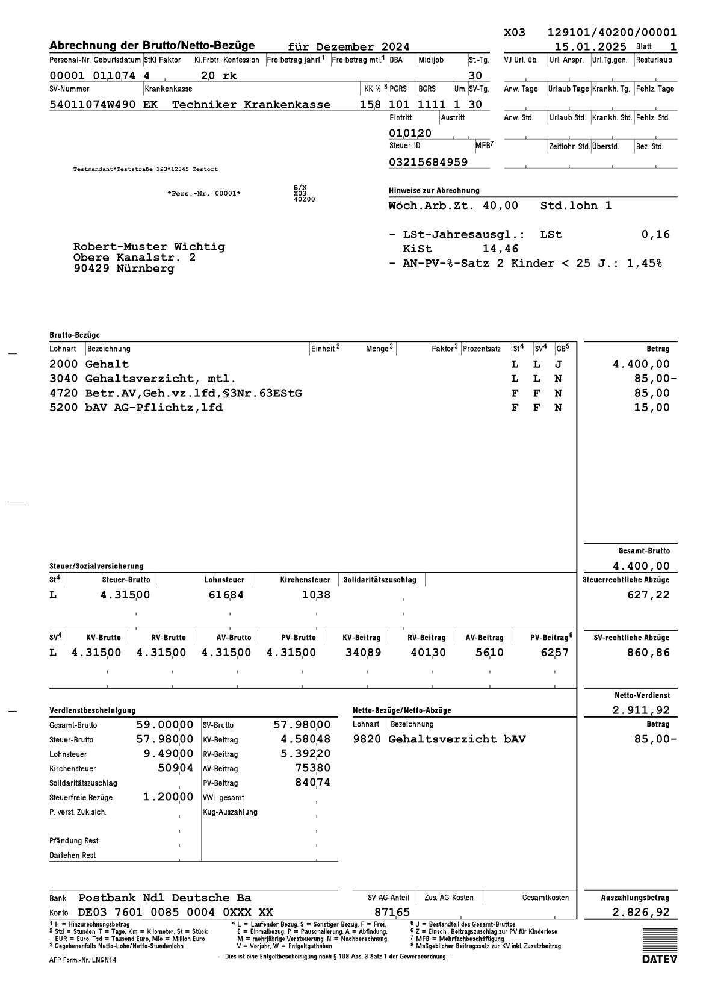
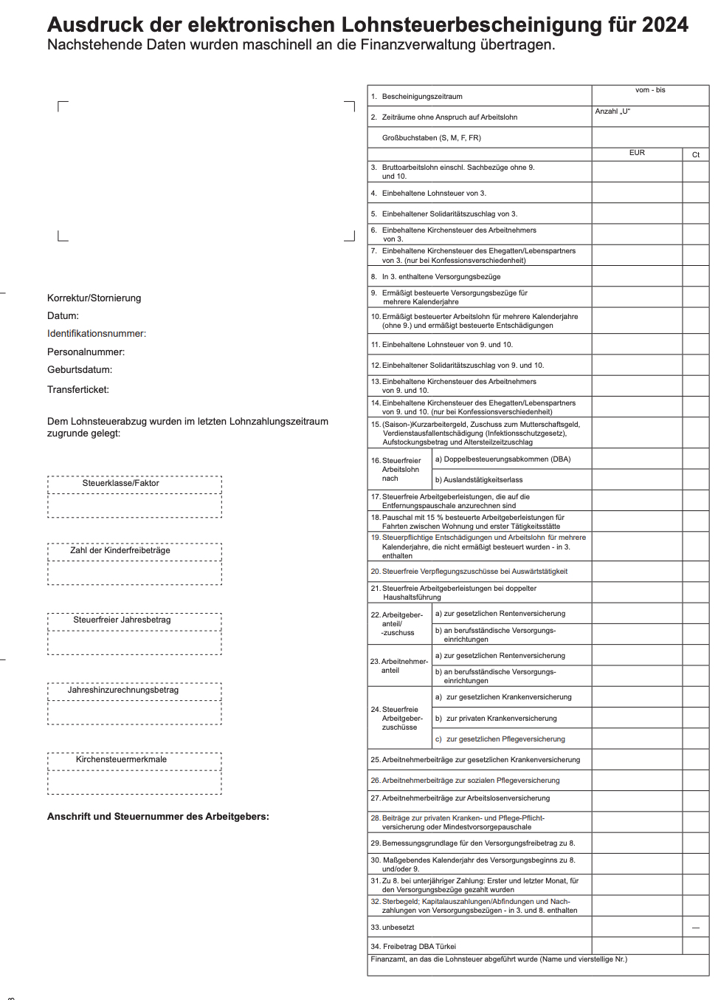

This is not a legal advice. This is a general information about taxes in Germany.
Please consult a tax lawyer for legal advice.
It's the money collected by the Finanzamt (Tax Office) to fund the German state.
In 2024, Income and Sales tax makes up to 52.5% of the Berlin state revenue. (Source: Berlin Open Data)
About 27% (1 million resident) of Berlin are foreign nationals without voting rights. (Source: Statistisches Bundesamt)
Infrastructure
Schools
Hospitals
Firefighers
Politicians
Da Police
More detals on Berlin's budget spending
Berlin's Haushaltsplan 2024/2025As an employee, you pay:
Brutto (Gross)
Netto (Net)
It's your:
Gross Total Global Income
- Social Contributions
- Work-related expenses
- Tax Allowances
= Taxable Income
To calculate your tax, you can use:
It's called Steuerklassen.
It's regulated under (EStG § 38b).
They are:
It's used to adjust the amount of taxes you have paid and get overpaid taxes refunded.
It's always 100% worth it to file a tax declaration!

